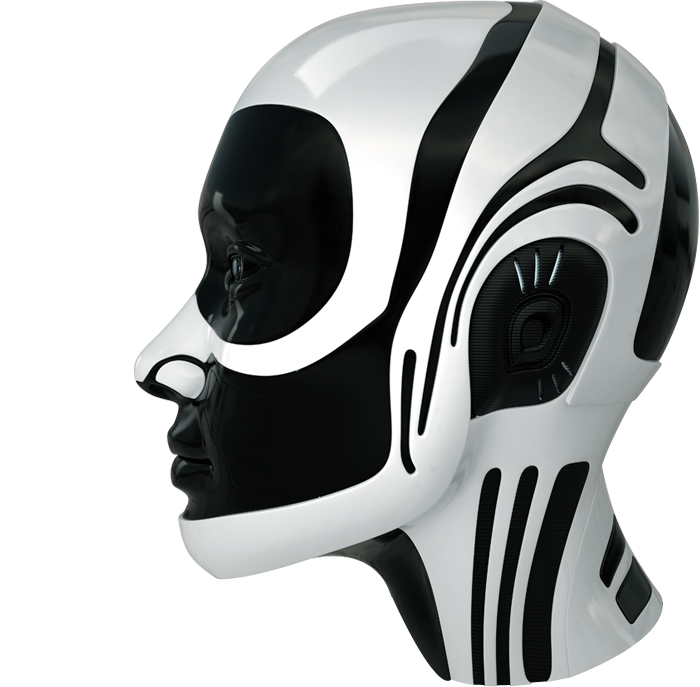
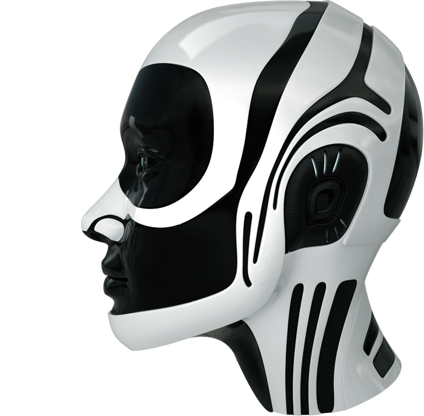
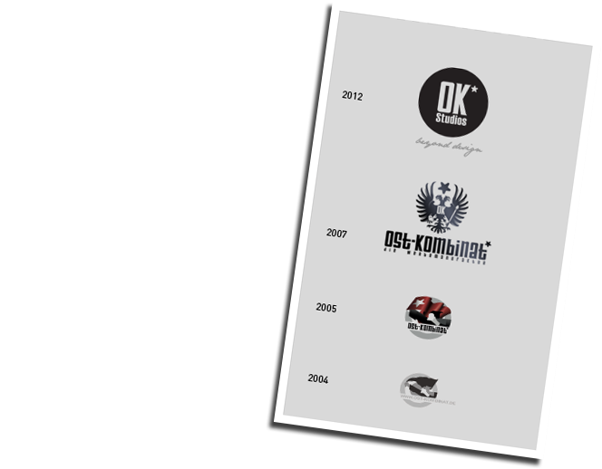
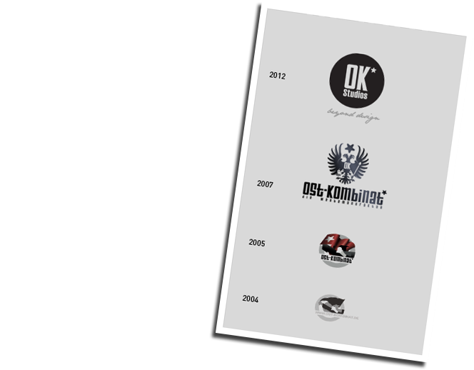

Wahre Schönheit kommt von außen
Ideen umsetzen, texten, gestalten, streiten,fotografieren, verwerfen. Fürs Bessere kämpfen. Machen, was die Aufgabe löst. Analog. Digital. Beides.
Mit jungen Leuten, die frei denken. Mit erfahrenen Leuten, die wissen, was geht und was nicht.
 

Magie und Erleuchtung. Verrückte und
Außerirdische. Das Technik Studio ist
nicht Mittel zum Zweck. Hier werden
Dinge gemacht, die mancher nicht
einmal verstehen möchte.
Techniken und Programmierungen, die
uns alle ein bisschen
glücklicher machen. Jeden Tag.


Ideen brauchen Raum. Und Zeit. Darum haben
wir für bessere Ideen ein eigenes Studio. Für
uns selbst. Für unsere Auftraggeber. Und für
alle zusammen.
Immer wieder auch mit neuen Menschen, die
uns helfen, über den Tellerrand zu blicken.
Damit wir für unsere Kunden ein fabelhafter
Ratgeber sind.
 


Liebevoll, begeistert, verantwortlich,
innovativ. Die Lösung der Aufgabe
vor Augen. Ohne Schubladen. Mit
Leidenschaft. Mit dieser Haltung
arbeiten wir. Inzwischen fast
15 Jahre im Herzen von Hamburg.
OK Studios stehen für neue Gestaltung,
für „handgemachte“ Technologie und
Präzision. Immer für den Kunden.
Und für seinen Erfolg.
_beyond design.
Design Studio PRAKTIKUM: WEB-ENTWICKLUNG m/w
Technik Studio Praktikant m/w
Technik Studio NEBENJOB: WEB-ENTWICKLUNG m/w
OK Studios Wichtige Informationen
Mitten in der Speicherstadt bietet Dir unsere
Agentur ein gemachtes Nest, in dem Du Dein
Potential in einem fabelhaften Team
vollkommen entfalten kannst. Unsere junge,
dynamische Agenturfamilie zählt 12 erfahrene
Altvögel, die Dich bei Deinem Einstieg
unterstützen. Ob bei ersten Flugstunden
während eines bezahlten Praktikums oder
virtuosen Höhenflügen durch unsere
Räumlichkeiten - WE ARE FAMILY.